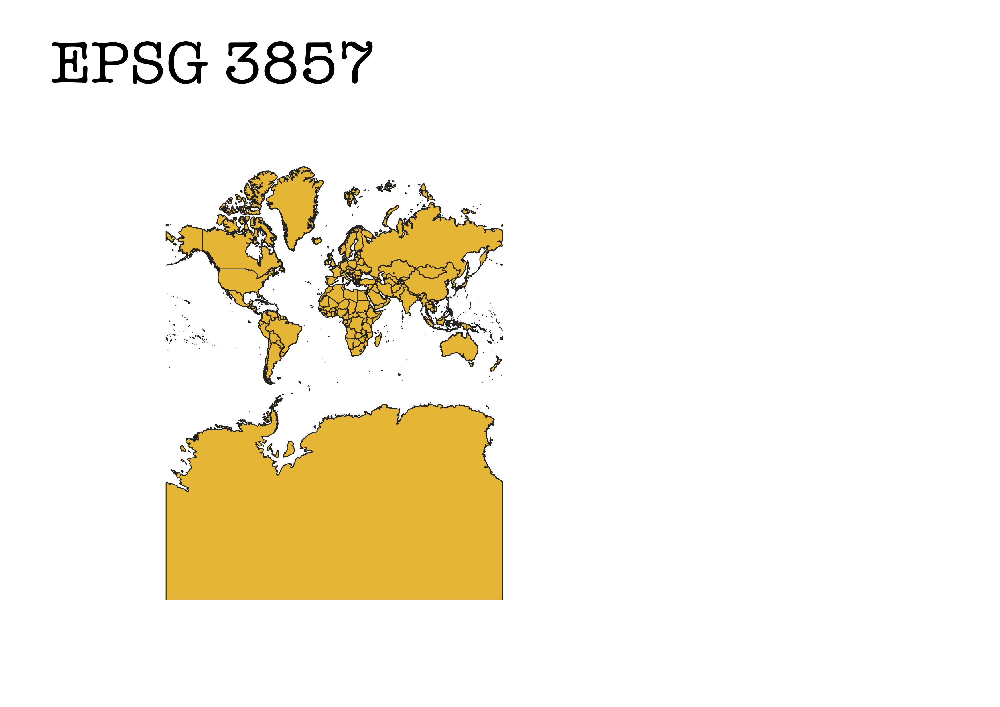
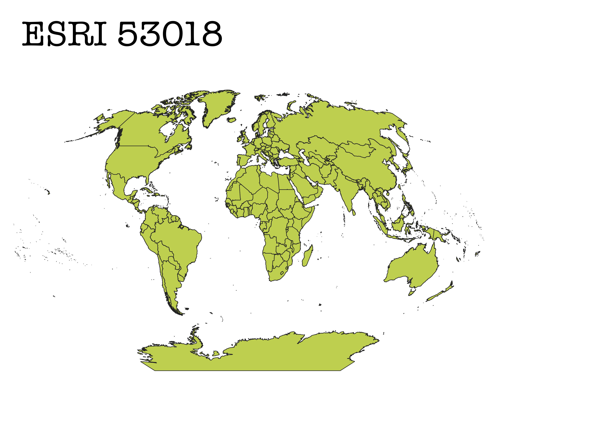
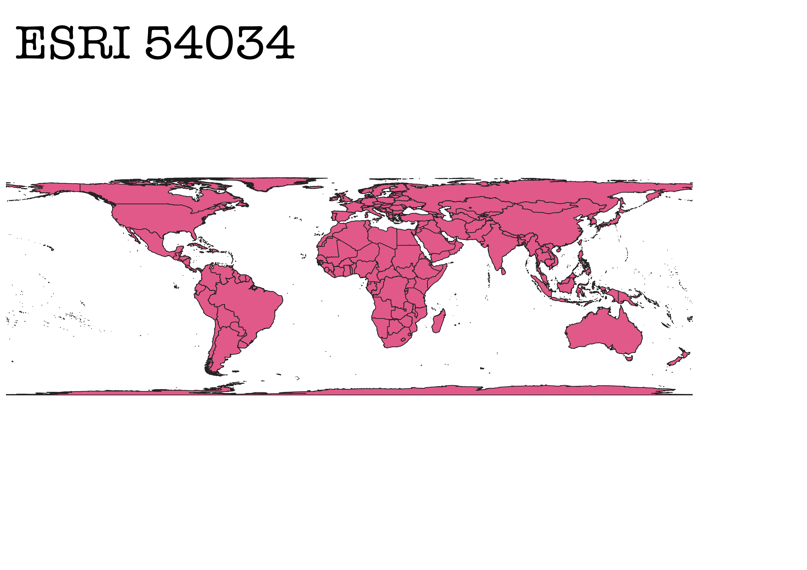
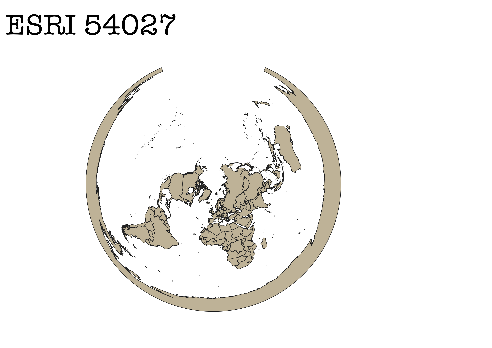

Homework3
WGS84

This projection is cylindrical. The projection conserves shape but not size. As you get further from the equator you can see how those continents becoming more significantly bigger and wider horizontally then they truly are. An example would be if you are looking at Greenland; Greenland looks about the same size as Africa but is substantially smaller.
World Atioff

This projection is an azimuthal projection of the whole world. This projection doesn’t conserve shape or size. As a world map is not very helpful it would be put to better use for small-scale mapping.
EPSG 3857

This projection is a spherical Mercator. This is most used in coordinate systems such as Google Maps. This kind of projection has a lot of distortion in the polar regions. It is better in small-scale mapping because it is less distorted when it has a local view of the area. This map conserves shape but not size, as you can see Antarctica takes up all of the space at the bottom of the map.
ESRI 53018

This is a conic projection. This map conserves the shape. As you get away from the equator you can see how the size of the circle is becoming larger. This kind of map will also be good for small-scale mapping just because the further away something is from each other there is a higher chance of it being distorted.
ESRI 54034

This map is a cylindrical projection. This projection only conserves shapes as you get closer the equator. As you get closer to the poles shape and size get disoriented. Some of the countries you can barley even see because of the way the map was drawn.
ESRI 54027

This map is an Azimuthal projection. In this form it has a very distorted way of showing the poles. It also does not converge shape, size, or distance. The poles don’t wrap around the world like it is being shown on the map with just a small map . They also shouldn’t be connecting. There would need to have a specific reason to use this map due to the fact of how distress it is.
ESRI 102016
 This map is an Azimuthal projection. It has very distorted poles. In this projection the poles are actually touching. The shapes, distance, and size are disoriented. This map in a smaller scale map would be useful but as a world map not so much.
ESRI 55403
This map is an Azimuthal projection. It has very distorted poles. In this projection the poles are actually touching. The shapes, distance, and size are disoriented. This map in a smaller scale map would be useful but as a world map not so much.
ESRI 55403
 This map is a spherical Mercator. In the projection being closer to the equator you are more likely to be true to size and shape. But as you go close to the poles the size becomes larger. As you move east or west the size becomes wider. This map is similar to the 3857 it just has more of a curvature.
ESRI 53049
This map is a spherical Mercator. In the projection being closer to the equator you are more likely to be true to size and shape. But as you go close to the poles the size becomes larger. As you move east or west the size becomes wider. This map is similar to the 3857 it just has more of a curvature.
ESRI 53049
 This would be a Azimuthal projection. Even it is a partial one that only shows Africa. This keeps the shape and size of Africa. This would be really useful if you are focusing on Africa. It also conserves the fiancé between continents. The poles also seem to not be distorted and be in the right place.
This would be a Azimuthal projection. Even it is a partial one that only shows Africa. This keeps the shape and size of Africa. This would be really useful if you are focusing on Africa. It also conserves the fiancé between continents. The poles also seem to not be distorted and be in the right place.